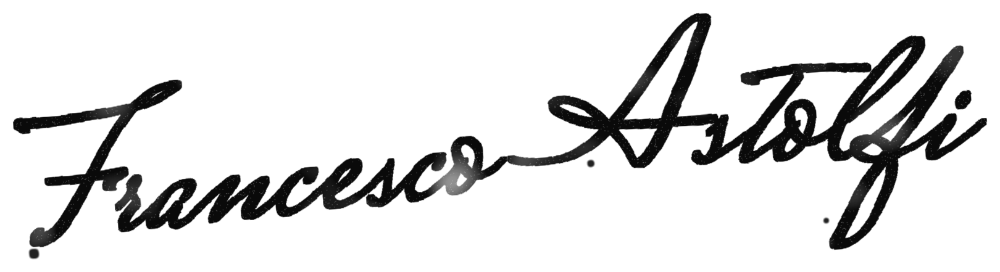

Una guida pratica per capire che tipo di hotel hai, quale leva fa davvero il tuo fatturato, e come costruire una narrativa coerente con la tua realtà invece che con la moda del momento.

Un hotel di successo è fatto di quattro componenti che si sommano per determinare quello che il mercato percepisce di te: il tuo Posizionamento di Mercato. Quando mancano tutte, non c'è miracolo di marketing che tenga. Quando ci sono tutte al massimo, il fatturato arriva da solo. Il lavoro vero sta nel capire quale di queste quattro componenti è la tua leva principale, e investire di conseguenza.
Le quattro componenti sono: dove si trova il tuo hotel, cosa hai costruito fisicamente, come lavori ogni giorno, come ti racconti al mercato.
Tutte e quattro contribuiscono al Posizionamento di Mercato. Puoi vincere spingendo su una delle quattro mentre le altre restano medie. Puoi vincere con due o tre alte. Puoi vincere con tutte e quattro alte, che è ovvio ma raro. Non puoi vincere con tutte e quattro basse: questo è il commodity che muore.
Importante distinguere due cose che spesso vengono confuse. Il Posizionamento di Mercato è il risultato percepito dal cliente: l'appeal complessivo del tuo hotel sul mercato. La Narrativa è una delle quattro componenti che lo determinano: la scelta deliberata di come racconti il tuo hotel al mondo. Le tre componenti strutturali (location, capitale, operations) richiedono investimenti o anni per cambiare. La narrativa è l'unica componente su cui puoi lavorare rapidamente, con costo marginale, senza toccare i mattoni.
La location non è solo un indirizzo. È il flusso di clienti che arriva da solo, è il nome che la gente riconosce quando lo pronunci al bar, è la ragione per cui un turista decide di spendere una settimana in una zona invece che in un'altra.
Portofino è una location da dieci. Capri è da dieci. Ravello, Positano, Venezia centro storico, il centro di Firenze, Taormina sono tutte da dieci. Qui l'hotel vende prima ancora che il proprietario parli.
Rimini, Jesolo, Senigallia, Grado, Caorle sono location da sei o sette. Hanno flussi stabili, estate forte, ma devi lavorare per catturare la tua fetta.
Un 4-stelle a Modena, Padova, Verona, Brescia è location da cinque. Flussi business e culturali, nessuna iconicità automatica.
Un hotel in un piccolo paese dell'entroterra abruzzese o del Monferrato parte da tre o quattro. Qui la location non ti aiuta: ti ostacola. Chi viene da te lo fa per una ragione specifica.
Il capitale è quanto hai investito nella struttura fisica. Non è solo il valore immobiliare: è la qualità percepita quando il cliente entra in camera, quando usa il bagno, quando mangia al ristorante, quando siede al bar.
Un hotel che ha rifatto le camere nel 2024 con investimento serio comunica una cosa. Uno con moquette del 2003 e materasso stanco ne comunica un'altra, qualunque cosa dica la brochure.
Le operations sono il lavoro quotidiano. Qualità del servizio al check-in, pulizia stabile delle camere, puntualità del ristorante, risposta rapida alle recensioni, revenue management attivo che adatta i prezzi, formazione del personale, gestione dei fornitori.
Un hotel con componenti medie ma operations eccellenti sopravvive e cresce. Un hotel con componenti alte ma operations scadenti brucia la sua reputazione in diciotto mesi.
Le operations sono la componente più sottovalutata dai proprietari e la più determinante nel lungo periodo.
La narrativa è la storia che l'hotel racconta al mondo. È la promessa che fai, il segmento che decidi di servire, l'identità distintiva che costruisci. È la ragione precisa per cui un cliente deve scegliere te e pagare il prezzo che chiedi.
Un hotel senza narrativa esiste come generico: camere al prezzo che il mercato OTA stabilisce, nessuna ragione specifica per sceglierlo rispetto ad altri. La sua narrativa è zero o quasi. Il Posizionamento di Mercato risulterà basso qualunque cosa facciano le altre tre componenti, perché manca il quarto addendo.
Un hotel con narrativa forte dà al cliente una ragione netta per sceglierlo. Può basarsi su asset specifici: la storia dell'hotel e della famiglia, un meccanismo operativo distintivo, un segmento target ultra-specifico, un'opposizione esplicita a categorie dominanti, una visione del mondo chiara.
La narrativa non è un'etichetta di marketing superficiale. È una scelta strategica che condiziona cosa offri, chi servi, come ti organizzi operativamente, come comunichi. E, importante, una volta scelta va mantenuta operativamente ogni giorno.
Due hotel con le stesse tre componenti strutturali possono avere narrative completamente diverse.
Un hotel 4-stelle con dieci camere su una collina umbra può posizionarsi come «boutique romantico per coppie» oppure come «ritiro silenzioso per professionisti in burnout» oppure come «casa di campagna per matrimoni intimi». Stesse camere, stesso prezzo di costruzione, stesso staff.
Narrative diverse. Clienti diversi. Prezzi diversi. Posizionamento di Mercato diverso.
La narrativa deve amplificare quello che hai, oppure costruire valore dove le altre componenti non arrivano.
Esistono quattro profili principali, uno per ciascuna delle quattro componenti. Riconoscere il tuo profilo cambia completamente la risposta su dove investire e come costruire la tua narrativa.
Una componente altissima (location nove o dieci) e le altre tre medio-basse. Esempio tipico: una piccola struttura a Positano con capitale investito modesto, operations familiari non da catena internazionale, narrativa ancora da costruire.
Il cliente paga per vivere Positano, Capri, Ravello attraverso l'hotel. L'hotel è il tramite, non il protagonista.
Una componente altissima (capitale nove o dieci) e le altre medio-basse. Esempio tipico: hotel in location secondaria con investimento multi-milionario in restoration o nuova costruzione iconica, operations ancora in rodaggio, narrativa ancora da costruire.
Il cliente paga per la bellezza dello spazio, l'estetica, la qualità materiale che non trova altrove nella zona.
Una componente altissima (operations nove o dieci) e le altre medio-basse. Esempio tipico: hotel urbano o costiero in location non iconica, capitale modesto ma ben gestito, narrativa basata sull'affidabilità ma non sempre codificata esplicitamente. Revenue management attivo, staff formato stabile, risposta recensioni rigorosa, F&B curato, pulizia impeccabile, pricing dinamico intelligente.
Il cliente paga per non pensarci. Per sapere che tutto funziona.
Una componente altissima (narrativa nove o dieci) e le altre medio-basse. Operations almeno a sei o sette, perché sotto quella soglia la narrativa non funziona comunque.
Due casi principali rientrano in questo profilo. Il primo è l'hotel storico familiare, dove la storia reale della famiglia e dell'immobile è l'asset che la narrativa trasforma in promessa: «quattro generazioni di famiglia», «qui dal 1897», «la memoria del territorio». La storia è vera, la narrativa la codifica e la vende.
Il secondo è l'hotel che non ha né location iconica né capitale massivo né storia familiare, ma ha costruito una narrativa radicale e specifica. Non «hotel di charme familiare per famiglie», che è generico. Esempi del livello richiesto: «l'hotel per genitori che vogliono dormire mentre i bambini fanno il campo tennis», «la casa dei triatleti del circuito di Misano», «l'hotel-pacchetto delle coppie che vogliono testare settimane di convivenza prima di sposarsi».
Eremito, in Umbria, è un ritiro contemplativo con silenzio obbligato, menu unico vegetariano, niente wifi, niente televisione. La location è dura, il capitale contenuto. La narrativa fa il lavoro che le altre componenti non possono fare, generando un ADR oltre i 300 €.
Sextantio, a Santo Stefano di Sessanio in Abruzzo, è l'altro esempio puro: Daniele Kihlgren ha costruito il «lusso dell'imperfezione» trasformando un borgo quasi abbandonato in un caso studio della Harvard Business School.
Nel mondo reale i profili puri sono rari. La maggior parte degli hotel ha due o tre componenti alte. Qui la narrativa deve raccontare l'intersezione, non uno solo degli elementi.
Luxury property recente in location iconica. L'Hotel Caruso Belmond, prima dell'era LVMH, era questo profilo. La narrativa coerente è l'esperienza totale del luogo attraverso l'investimento: «il modo più ricco di vivere Positano». Qui serve attenzione a non far percepire le operations come il collo di bottiglia dell'esperienza che gli altri due pilastri promettono.
Hotel in location iconica che non si limita a vendere il luogo, ma costruisce anche una narrativa distintiva. Casa Cipriani Milano è questo profilo: location iconica, narrativa «ambasciata regionale di Venezia» basata sulla storia reale della famiglia Cipriani dal 1931. La narrativa amplifica la location invece di esserne subordinata.
Hotel con eccellenza operativa che si posiziona esplicitamente su un segmento specifico. Esempi internazionali: The Pig Hotels in UK, con il fondatore Robin Hutson che codifica l'imperfezione curata come promessa operativa. L'hotel storico familiare in città d'arte minore rientra qui: operations familiari rigorose più la narrativa «quattro generazioni di ospitalità», basata sulla storia reale.
Hotel contemporaneo urbano o costiero con investimento serio e gestione professionale, in location secondaria. La narrativa coerente è «l'esperienza che non ti aspetti dove non te la aspetti». Qui la narrativa può costruire la destinazione invece di raccontarla. L'hotel diventa la ragione del viaggio.
Luxury con componenti tutte eccellenti. La narrativa qui lavora in amplificazione: estrae valore già latente nelle altre tre componenti. Il consulente che aiuta un hotel di questo profilo non lo salva: lo fa rendere ancora di più, catturando valore che oggi resta sul tavolo. Belmond, Rocco Forte, Baglioni investono costantemente nella loro narrativa per questo motivo. Il delta economico è misurabile in milioni di ricavi aggiuntivi all'anno.
La teoria dei profili diventa concreta quando guardi casi concreti. Nove hotel ipotetici con componenti diverse: che Posizionamento di Mercato e che fatturati annuali ragionevoli potrebbero generare. Componenti su scala zero-dieci. Il Posizionamento di Mercato è la somma delle quattro, su scala quattro-quaranta. Il fatturato dipende dal Posizionamento ma anche da numero di camere, giorni operativi annuali, ADR raggiungibile dal segmento. Esempi per spiegare il metodo, non hotel reali.
Stesso albergo a Positano, stesse camere, stesse operations. L'unica differenza è la narrativa. L'hotel A racconta genericamente «siamo a Positano, siamo accoglienti» (narrativa a 3). L'hotel B ha costruito «la casa capresina autentica» con collezione di oggetti locali, menu Positano-only, arredamento che racconta la storia del paese, pacchetti con esperienze gestite dai pescatori del porto (narrativa a 8). La narrativa ha amplificato la location iconica.
Posizionamento 25 → 30 · +1,5 M€ dalle stesse altre tre componentiStesso albergo a Cattolica, stesse camere, stesse operations. L'hotel C è un 4-stelle «famiglia e divertimento» come altri cinquanta sulla stessa costa (narrativa a 3). L'hotel D ha costruito «l'hotel ufficiale dei triatleti del circuito di Misano» con bike storage dedicato, nutrizionista sportivo, convenzioni con il circuito, pacchetti allenamento, apertura estesa a fine stagione per le gare autunnali (narrativa a 9). La narrativa ha trasformato un commodity in specialista.
Posizionamento 21 → 27 · +700.000 € e trenta giorni di apertura in piùL'hotel di Positano ha una location straordinaria ma opera 180 giorni l'anno (Posizionamento 25). L'hotel business a Milano Linate ha una location meno iconica ma opera 360 giorni l'anno, con operations eccellenti e narrativa chiara (Posizionamento 27). Il business hotel fattura quasi il doppio nonostante il Posizionamento sia simile, perché ha più camere (80 contro 25) e opera il doppio dei giorni.
Il Posizionamento dice quanto è forte l'hotel. Il fatturato dipende anche da dimensione e stagionalità.L'hotel storico di Mantova non vince su location e capitale, ma ha operations buone e una narrativa altissima basata sulla storia reale della famiglia: quattro generazioni di ospitalità, continuità, memoria del territorio (narrativa a 9). La storia qui non è una componente separata: è l'asset su cui la narrativa costruisce la promessa. Posizionamento 26, con 1,8 M€ di fatturato su sole 30 camere, su un segmento specifico di appassionati di storia che pagano un premio per un'autenticità non replicabile.
Il 3-stelle balneare delle Marche genera 440.000 € con 22 camere, operando quasi solo in stagione estiva. Posizionamento 17: un commodity che sopravvive sul flusso turistico generale. Nessuna narrativa costruita (solo a 2). Non fa errori gravi ma non ha leve. Una narrativa specifica, per esempio «l'hotel ufficiale degli appassionati di immersioni del Parco del Conero» o «la casa degli escursionisti del Monte Conero», porterebbe la narrativa da 2 a 8, il Posizionamento da 17 a 23, il fatturato facilmente oltre i 600.000 €, catturando segmenti premium che oggi scelgono altrove.
Narrativa 2 → 8 · Posizionamento 17 → 23Stesso agriturismo nel Monferrato, stesse dieci camere, stesse operations familiari, stessa cantina di casa. L'hotel H vende una generica «esperienza enogastronomica piemontese» come altri cinquanta agriturismi della zona (narrativa a 3, Posizionamento 17). L'hotel I ha costruito «la residenza del vignaiolo per enologi professionali», con un workshop annuale di tecnica enologica ospitato da una cantina diversa ogni anno, visite tecniche alle principali cantine del Monferrato per gruppi di enologi stranieri, pacchetti personalizzati di una settimana per studiare uno specifico produttore (narrativa a 9, Posizionamento 23).
La narrativa ha fatto il lavoro anche nel segmento micro, dove le altre tre componenti sono tutte basse. La leva narrativa non è riservata ai grandi: funziona anche nel piccolissimo, se è abbastanza specifica.
Posizionamento 17 → 23 · +310.000 €Il Posizionamento di Mercato è la somma delle quattro componenti. La narrativa è una di queste quattro, al pari delle altre tre. Può essere la leva primaria oppure amplificare le altre. In entrambi i casi sposta il risultato in modo misurabile.
Posizionamento di Mercato alto non significa automaticamente fatturato alto. Il fatturato dipende anche da dimensione dell'hotel, giorni operativi, ADR raggiungibile dal segmento. Un hotel piccolo con Posizionamento altissimo può fatturare meno di un hotel grande con Posizionamento medio: vedi Positano contro Milano Linate.
La location iconica da sola non garantisce il fatturato più alto. Spesso i proprietari di hotel in location secondarie si lamentano della location come se fosse il problema principale, quando il vero problema è altrove: nella narrativa non costruita.
Hotel con le stesse altre componenti ma narrativa diversa possono avere differenze di fatturato del trenta-sessanta per cento, dalla luxury property al micro-agriturismo. Questo è il valore reale del lavoro sulla narrativa, ed è accessibile a strutture di qualunque dimensione, perché è l'unica componente che non richiede grossi investimenti strutturali.
La narrativa crea aspettative che devono essere mantenute ogni giorno dalla gestione operativa.
La narrativa è una promessa che fai al cliente. Le operations sono il pagamento quotidiano di quella promessa. Se le operations non tengono la promessa, la narrativa amplifica il danno invece di generare valore. I clienti attirati dalla narrativa se ne vanno delusi, scrivono recensioni negative mirate proprio sulle cose che avevi promesso, e la narrativa diventa un boomerang.
Se le operations del tuo hotel non sono almeno solide (recensioni medie sopra 4,3/5, staff formato stabilmente, revenue management attivo, risposta rapida alle criticità), una narrativa radicale non è la mossa giusta. Prima vanno sistemate le operations. Dopo si lavora sulla narrativa.
Il caso Selina, catena globale di workation hub fallita nel 2024, è un esempio chiaro: narrativa forte, operations incapaci di sostenerla, una crescita che ha accelerato il crollo.
Esiste anche la trappola opposta. Una narrativa può essere troppo radicale per il mercato accessibile dalla combinazione di location e capitale che hai.
In Scozia, è stato il primo hotel 100% vegano del Regno Unito. Narrativa radicale perfetta in isolamento. Ma la combinazione (undici camere, Pitlochry remota, prezzo premium per una cucina plant-based rigorosa) ha trovato un mercato troppo piccolo per sostenere il business. Nel 2025 è stato venduto sotto valore e il nuovo gruppo ha reintrodotto i prodotti animali.
Una narrativa radicale su una location debole e con capacità piccola richiede una verifica preliminare: il bacino di clienti raggiungibili deve sostenere il fatturato minimo di sopravvivenza.
Molto spesso la soluzione non è radicalizzare meno la narrativa. È trovare una narrativa diversa, radicale ma su un asse con un mercato più ampio.
08 · L'autodiagnosiPrima di investire un euro nella costruzione della narrativa, rispondi onestamente a tre domande.
Guarda le recensioni degli ultimi ventiquattro mesi su Google, Booking e TripAdvisor. La media aggregata è sopra 4,3/5? Lo staff è formato e stabile? Hai un revenue management attivo che adatta i prezzi al mercato? Rispondi tempestivamente a recensioni e segnalazioni?
Fai un'autodiagnosi onesta sulle quattro componenti. Da zero a dieci su ciascuna, senza barare. Somma i quattro numeri e vedi il tuo Posizionamento di Mercato attuale.
Data la narrativa che stai pensando, coerente con il tuo profilo, il bacino di clienti accessibili geograficamente e per capacità di spesa sostiene il fatturato minimo di sopravvivenza dell'hotel?
Un calcolo semplice: numero di camere × occupazione obiettivo × giorni operativi × ADR obiettivo. Il risultato è il tuo fatturato minimo. I clienti potenziali per quella narrativa, nel tuo bacino raggiungibile, sono abbastanza?
Le quattro componenti di un hotel (location, capitale, operations, narrativa) contribuiscono tutte al Posizionamento di Mercato percepito dal cliente. La scelta della narrativa giusta dipende dal profilo del tuo hotel. Un hotel location-driven ha bisogno di una narrativa che racconta il luogo. Un hotel operations-driven ha bisogno di una narrativa che racconta l'affidabilità. Un hotel narrativa-driven ha bisogno di una narrativa radicale, che costruisce valore dove le altre componenti non arrivano da sole.
Il consulente giusto non ti vende la stessa narrativa per tutti i casi. Fa prima la diagnosi del tuo profilo, poi sceglie il tipo di narrativa coerente con le altre tre componenti, poi verifica che le operations tengano la promessa e che il mercato sostenga il business.
Se dopo le tre domande sei convinto che la narrativa sia la leva su cui investire, il passo successivo è capire quale pattern fa per te. Esistono circa cinquanta pattern di narrativa osservati nel mercato internazionale e italiano. Scegliere quello coerente con il tuo profilo è un lavoro di diagnosi che richiede uno sguardo esterno.
Se dopo le tre domande non sei sicuro, o se la risposta alla prima è stata no, la narrativa può aspettare. Lavora prima su quello che serve.
Quasi nessuno lo fa prima di spendere soldi in marketing. Tu l'hai fatto. Questo è già un vantaggio competitivo.
Ho portato TUI.it da zero a trenta milioni. Ho guidato il marketing di Atahotels. Ho lavorato in un'agenzia per hotel e aperto dieci locali con capitale mio.
Ogni smontaggio e ogni analisi li faccio io, a mano. Per questo gli smontaggi gratuiti sono al massimo sei al mese.
I consulenti vendono consigli. Gli operatori vendono cicatrici.
Se vuoi sapere come ti vede l'ospite oggi, parti dallo smontaggio. Se vuoi il metodo completo da applicare da solo, parti dal libro.
Copro i loghi e leggo le prime righe come un ospite che non vi conosce. Una pagina, scritta da me. Niente accessi, niente password.
Il metodo completo per trovare il motivo per cui l'ospite sceglie il tuo hotel, e scriverlo. Con otto strumenti gratis per applicarlo.